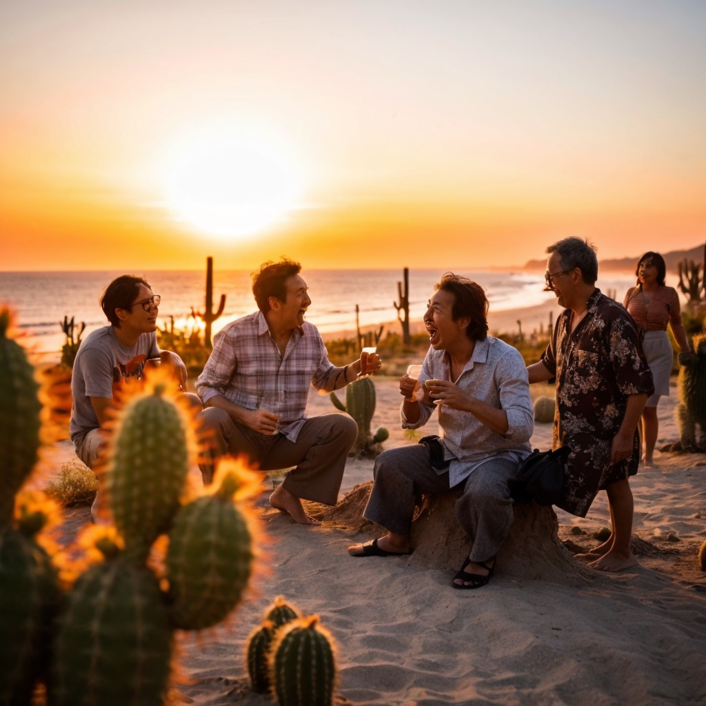

あさひテキーラプロジェクト
★☆★ ようこそ！KIYOSHIのテキーラ珍道中へ ★☆★
旭市からメキシコへ、夢のテキーラを求めて

プロジェクト概要
|
ブログ
|
インタビュー
|
お問い合わせ
★ KIYOSHIの珍道中ブログ ★
Day1「アガベ買い付け大作戦〜イカした冒険の始まりだべ！〜」
Day2「アガベと帰国作戦〜イカれた作戦で一発逆転だべ！〜」
Day3「アガベ栽培開始！〜旭の大地で夢が芽吹くべ〜」
Day4「イガベ旋風、旭市を駆け抜ける！〜意外な展開にアガベもビックリ〜」
Day5「イガベVSアガベ！旭で繰り広げられる珍バトル〜」
NEW!
申し訳ありません。サイト工事中です！
最新情報は
メール
でお問い合わせください。
あなたは 1234567 人目の訪問者です！
© 2024 あさひテキーラプロジェクト. All rights reserved.
最終更新日: 2024年7月12日